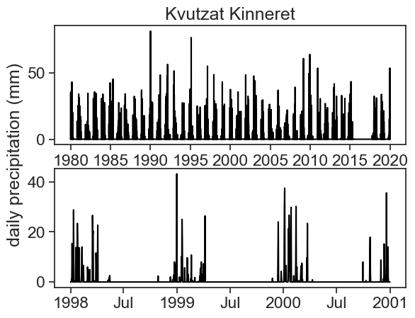

9 FAQ
9.1 How to resample by year, but have it end in September?
This is called anchored offset. One possible use to it is to calculate statistics according to the hydrological year that, for example, ends in September.
filename = "../archive/data/Kinneret_Kvuza_daily_rainfall.csv"
df = pd.read_csv(filename, na_values=['-'])
df.rename(columns={'Date': 'date',
'Daily Rainfall (mm)': 'rain'}, inplace=True)
df['date'] = pd.to_datetime(df['date'], dayfirst=True)
df = df.set_index('date')
df = df.resample('D').asfreq().fillna(0) # asfreq = replace
df| Station | rain | |
|---|---|---|
| date | ||
| 1980-01-02 | Kinneret Kvuza 09/1977-08/2023 | 0.0 |
| 1980-01-03 | 0 | 0.0 |
| 1980-01-04 | 0 | 0.0 |
| 1980-01-05 | Kinneret Kvuza 09/1977-08/2023 | 35.5 |
| 1980-01-06 | Kinneret Kvuza 09/1977-08/2023 | 2.2 |
| ... | ... | ... |
| 2019-12-26 | Kinneret Kvuza 09/1977-08/2023 | 39.4 |
| 2019-12-27 | Kinneret Kvuza 09/1977-08/2023 | 5.2 |
| 2019-12-28 | Kinneret Kvuza 09/1977-08/2023 | 1.6 |
| 2019-12-29 | 0 | 0.0 |
| 2019-12-30 | Kinneret Kvuza 09/1977-08/2023 | 0.1 |
14608 rows × 2 columns
fig, ax = plt.subplots(2,1)
ax[0].plot(df['rain'], color='black')
ax[1].plot(df.loc['1998':'2000', 'rain'], color='black')
locator = mdates.AutoDateLocator(minticks=4, maxticks=8)
formatter = mdates.ConciseDateFormatter(locator)
ax[1].xaxis.set_major_locator(locator)
ax[1].xaxis.set_major_formatter(formatter)
fig.text(0.02, 0.5, 'daily precipitation (mm)', va='center', rotation='vertical')
ax[0].set_title("Kvutzat Kinneret")Text(0.5, 1.0, 'Kvutzat Kinneret')
We see a marked dry season during the summer, so let’s assume the Hydrological Year ends in September.
/var/folders/c3/7hp0d36n6vv8jc9hm2440__00000gn/T/ipykernel_94063/2047090134.py:1: FutureWarning: The default value of numeric_only in DataFrameGroupBy.sum is deprecated. In a future version, numeric_only will default to False. Either specify numeric_only or select only columns which should be valid for the function.
df_year = df.resample('A-SEP').sum()| rain | |
|---|---|
| date | |
| 1980-09-30 | 355.5 |
| 1981-09-30 | 463.1 |
| 1982-09-30 | 221.7 |
| 1983-09-30 | 557.1 |
| 1984-09-30 | 335.3 |
| 1985-09-30 | 379.8 |
| 1986-09-30 | 300.7 |
| 1987-09-30 | 424.7 |
| 1988-09-30 | 421.6 |
| 1989-09-30 | 251.6 |
| 1990-09-30 | 432.5 |
| 1991-09-30 | 328.3 |
| 1992-09-30 | 738.4 |
| 1993-09-30 | 434.9 |
| 1994-09-30 | 255.4 |
| 1995-09-30 | 408.6 |
| 1996-09-30 | 373.0 |
| 1997-09-30 | 416.2 |
| 1998-09-30 | 451.9 |
| 1999-09-30 | 227.8 |
| 2000-09-30 | 378.9 |
| 2001-09-30 | 273.9 |
| 2002-09-30 | 445.2 |
| 2003-09-30 | 602.4 |
9.2 When upsampling, how to fill missing values with zero?
We did that in the example above, like this: